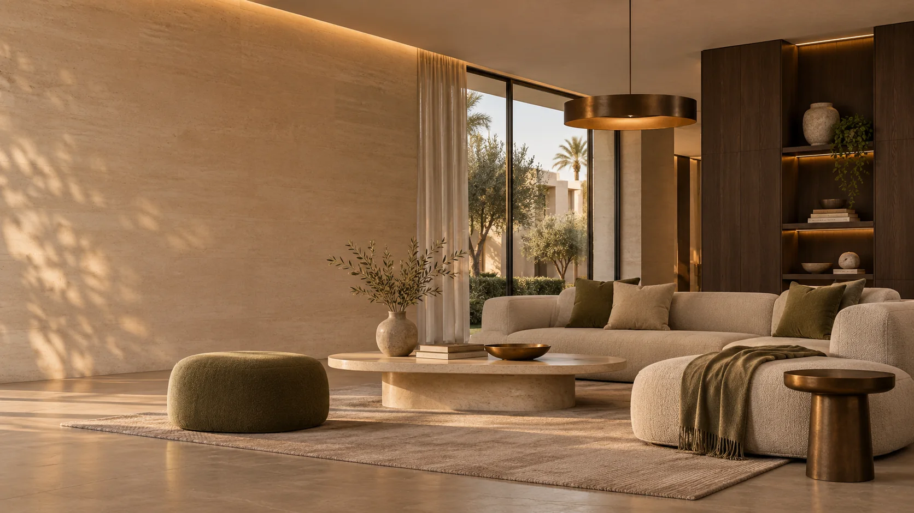

صورة تصورية للمقترحConcept 01
استقبال سكني هادئ
تكوين يعتمد على الحجر الطبيعي والخشب الداكن والأنسجة الدافئة، مع مساحات تنفس واضحة وإضاءة متعددة الطبقات.
Selected work
الجزء الأول يقدم اتجاهًا بصريًا أصليًا للموقع المقترح، والجزء الثاني يوثق أسماء ومواقع وسنوات مشروعات منشورة فعليًا بواسطة الاستوديو.
تنبيه بصري: الصور في هذا القسم صُنعت خصيصًا لتوضيح جودة العرض الممكنة للموقع؛ لا تمثل مشروعات منفذة أو صورًا من أرشيف الاستوديو.

صورة تصورية للمقترحConcept 01
تكوين يعتمد على الحجر الطبيعي والخشب الداكن والأنسجة الدافئة، مع مساحات تنفس واضحة وإضاءة متعددة الطبقات.
 صورة تصورية للمقترح
صورة تصورية للمقترحConcept 02
خزائن جوز متكاملة، جزيرة من الحجر وإضاءة دافئة تعطي المساحة حضورًا عمليًا وهادئًا في الوقت نفسه.
 صورة تصورية للمقترح
صورة تصورية للمقترحConcept 03
لغة بصرية ناعمة تجمع بين الأقمشة المحايدة والخشب والإضاءة النحاسية الدقيقة لصناعة مساحة مريحة وغير متكلفة.
 صورة تصورية للمقترح
صورة تصورية للمقترحConcept 04
مدخل يخلق انطباعًا أول متوازنًا عبر الحجر المنحوت، المرآة المقوسة، الخشب الداكن ونقطة خضراء واحدة.
Published archive
هذه القائمة تعتمد على منشورات عامة من حسابات الاستوديو والمصممين المرتبطين به. الروابط تفتح المصدر الأصلي للتحقق من الاسم والموقع والسنة.
تصميم استقبال منشور على صفحة الشركة في LinkedIn ومذكور كسنة مشروع 2025.
فتح صفحة الشركة ↗مشروع غرفة نوم رئيسية منشور مع أدوات العمل: 3D Max وCorona Renderer وPhotoshop.
فتح المنشور ↗مساحة معيشة منشورة بواسطة الاستوديو ضمن شقة في Sky Condos.
فتح المنشور ↗مشروع منشور على Behance، مُسند من Hossam Saad Designs ومصمم ومُظهر بواسطة Yomna Ahmed.
فتح المشروع ↗